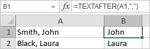

TEXTAFTER Funkcija
TEXTAFTER funkcija je jedna od tekstualnih i podataka funkcija. Koristi se za vraćanje teksta koji se nalazi nakon razdelnika.
Sintaksa
TEXTAFTER(text, delimiter, [instance_num], [match_mode], [match_end], [if_not_found])
TEXTAFTER funkcija ima sledeće argumente:
| Argument | Opis |
|---|---|
| text | Tekst u kome se pretražuje. Korišćenje džoker karaktera nije dozvoljeno. Ako je text prazan, funkcija vraća prazan tekst. |
| delimiter | Tekst koji označava mesto nakon kojeg funkcija izvlači tekst. |
| instance_num | Opcioni argument. Određuje koje pojavljivanje razdelnika funkcija koristi za izvlačenje teksta. Po default-u, instance_num je 1. Negativan broj pretražuje tekst od kraja. |
| match_mode | Opcioni argument. Određuje da li je pretraga osetljiva na velika/mala slova. Po default-u je osetljiva. Sledeće vrednosti se koriste: 0 za osetljivo, 1 za neosetljivo na velika/mala slova. |
| match_end | Opcioni argument. Tretira kraj teksta kao razdelnik. Po default-u tekst se tačno poklapa. Sledeće vrednosti se koriste: 0 za ne poklapanje razdelnika sa krajem teksta, 1 za poklapanje razdelnika sa krajem teksta. |
| if_not_found | Opcioni argument. Postavlja vrednost koja se vraća ako poklapanje nije pronađeno. |
Napomene
Kako primeniti TEXTAFTER funkciju.
Primeri
Slika ispod prikazuje rezultat koji vraća TEXTAFTER funkcija.
